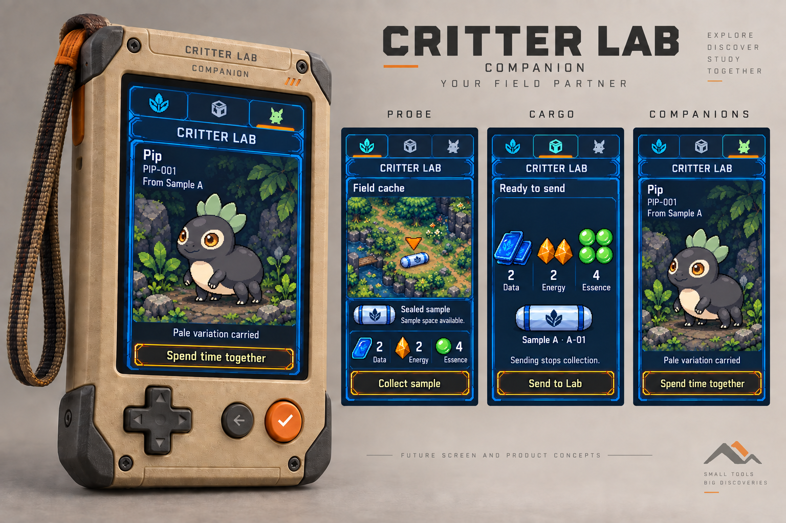

Explore. Decode. Create.A project by Dirty Pawz Press
CRITTER LAB.
Little Beechos. Big “what if?” energy.
Head out with the Companion. Bring a mystery home to the Lab. Discover its genome, create a Beecho and get to know the individual it becomes. A hands-on, open-source game about curiosity, living creatures and a family nobody else has.
For curious minds, happy tinkerers and anyone who has ever wondered: what happens if I try this?
01
Go out. Find something.
Take the Companion on an expedition. Follow clues, gather supplies and bring samples home in Cargo. Accept the haul at the Lab, then decide which mystery to follow. The intended field world adds varied places, encounters and discoveries worth returning for.
Explore / Gather / Return02
Follow a hunch. Meet a possibility.
Investigate a sample’s genome, keep each finding and return with supplies for the next study. The intended Lab lets a fully decoded genome shape a complete creation choice: review it, incubate it and meet one saved individual. Inherited possibilities become a creature you can recognize.
Research / Configure / Create03
Get to know them. Build a lineage.
Keep residents at home and take travelling Beechos along. The wider design brings bonding, training and selective breeding into the same family story. The Lab shows their living world; the Caddy keeps a quiet overview and brings discoveries to paper.
Bond / Train / Breed / Keep
Product direction · The game simulator connects a bounded gathering-to-resident journey. The separate genome bench explores authoring and source-derived creatures. Broad genome generation, bonding, training, breeding and the complete physical kit remain unfinished.
02 / Curiosity goes deep
Cute on the outside. Fascinating underneath.
There’s more to a Beecho than its looks. Fictional genomics connects body organization, appearance, capabilities and inherited tendencies. Research reveals those possibilities a piece at a time. The ambition is many recognizable kinds of creature, with family resemblance and meaningful variation within each—not one shape with different accessories.
See the new research screen concepts → A plain coat can carry pale variation without showing pale markings. The screen sequence keeps that discovery distinct from choosing a complete creation.
Look closer
Hidden traits. New possibilities.
A Beecho can carry a trait you can’t see. Research and family history give you clues to what might appear in a future generation. There’s a reason to keep looking.
Follow a hunch
Breed for the unexpected.
Chase unusual markings, explore a useful ability or develop your own distinctive family. Inherited traits combine and influence one another, making every pairing an experiment worth thinking about.
Get to know them
A life beyond the genome.
Genes give each Beecho its starting possibilities. The wider design brings environment, development and training into its life, so family resemblance can sit alongside an individual story.
For the wonderfully curious: what’s under the hood?
The design includes traits shaped by several genes, genes that influence each other, hidden inherited variants, and rules connecting fictional biology to abilities. Eleven genomic layers span structure and appearance through movement, sensing, cognition, energy, protection, affinities, development, reproduction and fantastic physiology. Five separate record stages keep inherited information, expression and lifetime history distinct. Learned skills do not automatically become inherited traits.
The separate workbench lets you edit supported inherited contributions, resolve a constructed source creature and inspect which copied values caused its parts and markings. Versioned recipes preserve an earlier creature when definitions change.
From source to a short art brief.
A copyable brief describes the actual source’s organization, parts, materials and local colours. The source image and exact brief stay together as the basis for a pet-art proposal. Read an actual copied brief →
Keep the proposal. Keep its origin.
Explicitly retained returned art stays linked to its exact source and brief. Reopen that source to inspect it again. The retained pet example → improves fur and ears while changing colours and adding details; it remains a proposal.
Authoring experiment · Explore a limited creature vocabulary. Broad organism variety, finished pet art and animation are still taking shape. These source creatures and retained art proposals are separate from saved game residents.
What this authoring preview covers
The current record carries 114 copied allele pairs and six drafts across eleven genomic headings. That is incomplete coverage: four branches lack executable contracts, and other inherited values still lack consumers. Complete-genome sharing and integration with game research and configured incubation remain unfinished.
Product direction: a complete local adventure, with a wider world when you want one.
The standalone kit
Yours from the first discovery.
Explore, research, create, breed and print. The core game lives with your kit, ready to play without a cloud subscription or a phone.
Keep your collection and discoveries locally.
Play offline, at your own pace.
Meet nearby kits to interact and trade.
Print records of the Beechos you create.
Your kit. Your little world.The optional Cloud Pass
A little lab. A global community.
Take your discoveries further. Join a worldwide network of curious breeders and collectors, and find possibilities beyond your own kit.
Trade Beechos across the global network.
Find breeding partners around the world.
Trace lineages and access certificates.
Discover minigames and more ways to play.
Go global when you’re ready.
Product direction · The simulator runs one saved local world with simulated device communication. Nearby-kit exchange, breeding and Cloud Pass services remain planned. Local core play must work without cloud acceptance; exact service and recovery rules are still being designed. Physical kits, availability and pricing have not been announced.
04 / The devices
Three objects. One little world.
Something to take with you. Somewhere to follow a hunch. A home to come back to.
Your everyday field partner
Good company. Great curiosity.
One portable, three modes: Probe for expeditions, Cargo for earned supplies and samples, and Companions for travelling Beechos. Switch views without interrupting your outing.
The intended Companion is a deep digital pet: initiative, reciprocal response, bonding and training give each resident a life beyond its records. The simulator currently supports inspection and accepted visits to the same saved individual. Rich pet behavior, wild capture and party assignment remain unfinished.
Probe / Cargo / Companions

New future product concept · Grounded Probe, Cargo and Companions screens; physical operation remains unverified
Your home research workbench
Follow that little hunch.
Investigate accepted samples, compare findings and shape a deliberate creation choice. The intended Lab is a customizable research workbench, with room for crafting, collections and increasingly complex genomes.
Pick it up to follow a hunch, or play while it rests at home. At rest, the Lab is intended to show living environments, residents and research; the Caddy carries the quiet summary. Raspberry Pi 4 is the Lab development reference. Current evidence is host software, with physical play still to prove.
Research / Configure / Create
Hardware concept · Display content and enclosure are not physical validation
A home for your instruments
All together. Ready for more.
The Caddy is the shared charging and printing home. Its intended ambient summary keeps habitats, residents, incubations, stored supplies and device status close by, without competing with the Lab’s living display.
The software prototype shows accepted world summaries and a simulated print flow. Disconnected views label their saved snapshot as cached, with its timestamp. Docking creates no supplies, transfer or care progress by itself. Charging, sensors and physical printing still need hardware proof.
Charge / Print / Keep track
Hardware concept · Charging, status signals and printing remain unmeasured
05 / Your discoveries
A Beecho of your own.
Collect for beauty. Experiment for possibility. Explore just because.
Pursue unusual markings, a useful ability or a lineage that thrives in a particular environment. There is no single ideal Beecho everyone has to make.
The game preserves individual identity and the discoveries behind each creation. Another player’s discovery stays theirs: scanning a Beecho doesn’t grant ownership or breeding permission.
New future screen concepts / Companion
A sealed sample, a deliberate return and the same saved individual. These new concepts apply the grounded game loop to the selected pixel art direction.
Find something. Bring it home. Meet someone.Concepts 01, 02 and 07 · Collecting the sample is deliberate. Send seals the displayed Cargo and stops collection; the Lab accepts it separately. After research, creation, incubation and deliberate opening, Pip is the same saved individual. The terrain is an illustrative cache scene, not a playable map.
The wider world being designed
Craft & experiment
Use gathered supplies to try combinations, follow clues and discover useful recipes. Your encyclopedia retains what you learn for the next experiment.
Build habitats
Explore environments with their own populations, resources and conditions. Inherited affinities help explain where a Beecho may thrive; exact habitat simulation rules are still being designed.
Keep discovering
Return to partially decoded samples, compare new findings with familiar families, and decide which investigation or lineage deserves your attention next.
06 / Physical discoveries
A discovery you can hold.
From a little screen to your field notebook.
The Caddy’s intended printer brings the collection into the physical world. Keep a recognizable Beecho alongside its identity and discoveries: something to compare or share across the table.
Specimen cards, research records and family trees are planned ways to make that collection tangible. A printed code identifies a permitted record; scanning grants no ownership or breeding rights. Print formats, paper readability and physical printer operation remain to prove.
07 / Open source by design
Curiosity shouldn’t stop at the case.
Play it. Understand it. Make it your own.
The rules, the code, the making of it: Critter Lab is being built in the open. Follow a discovery all the way from a Beecho’s traits to the logic that makes them possible.
Read the game systems. Explore the software. Follow the hardware and enclosure sources as they develop. Learn from it, experiment with your own ideas, or contribute something back.
Software: AGPL-3.0 · Hardware sources: CERN-OHL-S-2.0 · Documentation and eligible art: CC BY-SA 4.0. License details
08 / One shared world
Keep the discovery. Know what’s current.
The Caddy keeps a quiet summary of accepted records. It belongs to the same world as the Lab and Companion, with the same individual and an honest account of what it last received.
08 · A shared summaryFuture screen concept · The research record remains after Sample A is used. This illustrative snapshot follows creation and deliberate opening; the timestamp is example content. It claims no live connection, charging measurement or physical e-paper performance.
The wider vision still includes varied habitats, bonding, training, selective breeding and discoveries on paper. These concepts show a grounded slice; broad creature range, animation and the physical kit remain unfinished. Screen journey, controls and design sources →
09 / From a mystery to a beginning
Look closer. Make it deliberate.
The new Lab concepts carry one sample through receipt, a retained finding, free reference comparison and a separate creation review. They show the intended visual quality of future screens. Parts of this journey work in the current simulator; its presentation remains less developed.
03–06 · The Lab’s research journeyFuture screen concepts · Plain and marked are adult/mild reference alternatives, not two residents. The top resource header is available stock; the creation workpiece labels its cost separately. Findings remain after the sample’s material is used.
Between the pictured moments: Accept stores the haul. Read the pattern uses 4 Data; coat comparison uses 4 Essence. Movement research then uses 4 Energy, and a later accepted haul adds 3 Data, 3 Energy and 5 Essence. The complete reference preview and creation review therefore show 5 of each supply.
Create uses Sample A once and 5 of each supply, leaving zero of each. Incubation does not reveal the individual automatically: deliberate Open comes before Pip’s resident screen. These figures reuse illustrative prototype content; they are not final balance decisions.
These images are newly drawn concepts, not screenshots of the running game or native sprite masters. The simulator retains its current interface and release identity. Wireless exchange and printing remain simulated; the separate genome bench does not create game residents. Actual Research evidence →Earlier software captures →Game release notes →
A few useful answers
Curious?
Can I buy a Critter Lab kit?
Not yet. Critter Lab is in design and prototyping. Hardware renders and illustrated screen studies are concepts; native captures show bounded software evidence. The project is not yet a complete buildable kit. A release date and selling price have not been announced.
Do I need a phone to play?
The intended kit supports device-hosted setup and core play without a phone or cloud subscription. The current software prototypes run in a browser; dedicated hardware is still being developed.
Do I need the Cloud Pass?
The intended core game works locally without a Cloud Pass. Nearby-kit interaction belongs to that standalone experience. The optional pass is planned to add global trading and breeding, lineage, certificates and minigames; those services are not available in the current prototypes.
How do the Lab and Companion work together?
The Companion gathers samples and supplies; the Lab accepts them and handles research, creation and incubation. Home returns to the Lab overview, and Habitat holds your revealed residents. Core V1 lets you inspect and visit the same saved individual at Lab and Companion; disconnected Companion views are cached and cannot record new visits. The Caddy summarizes the accepted shared world.
Does the genome bench create a game resident?
The bench is a separate authoring experiment. It resolves versioned genomes into source creatures and derives an art brief. Returned pet art can be explicitly retained against its exact source, always as a proposal. Full genomic coverage, accepted creature art, animation and integration with game incubation remain unfinished. Keep exported source recipes, returned bitmaps and linked metadata; browser storage can be cleared or unavailable.
Is Critter Lab open source?
Yes. The public project contains the product specifications, code and design studies. Software uses AGPL-3.0-only, hardware sources use CERN-OHL-S-2.0, and documentation and eligible artwork use CC-BY-SA-4.0.